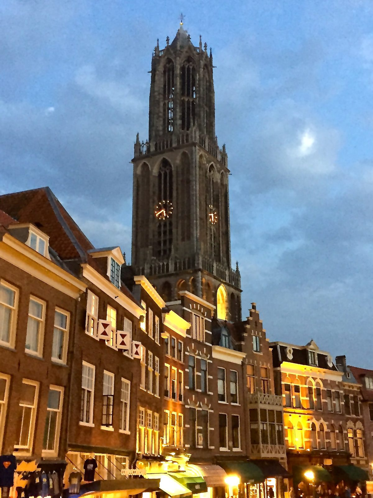
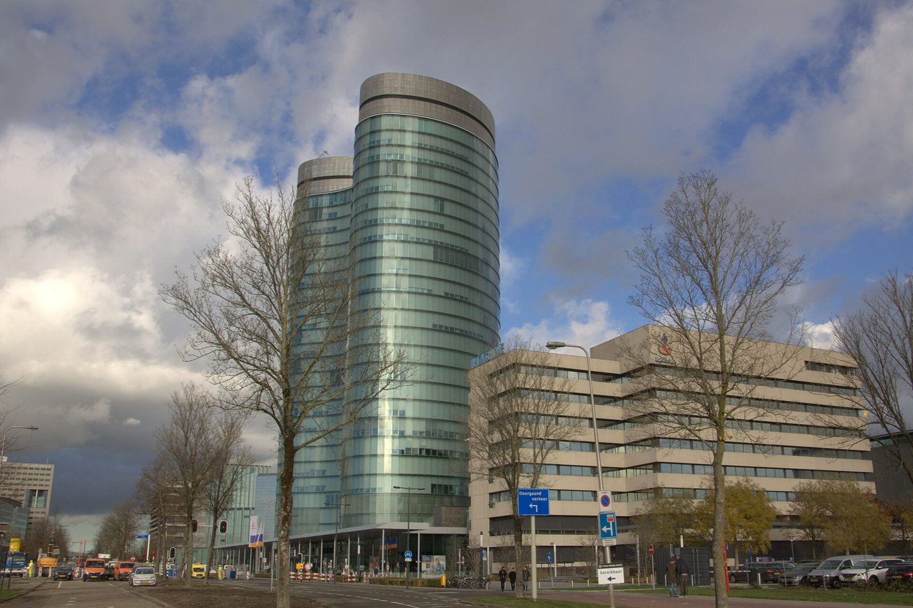
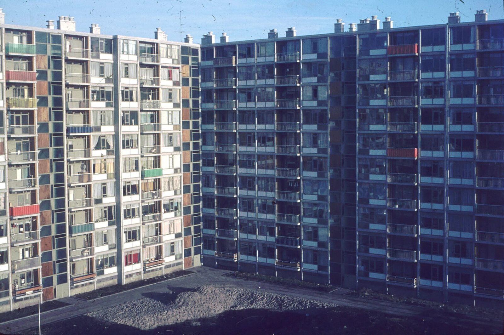
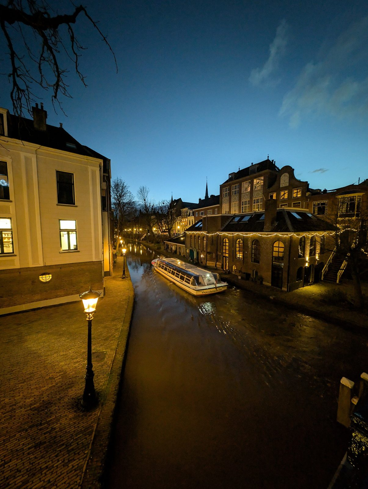
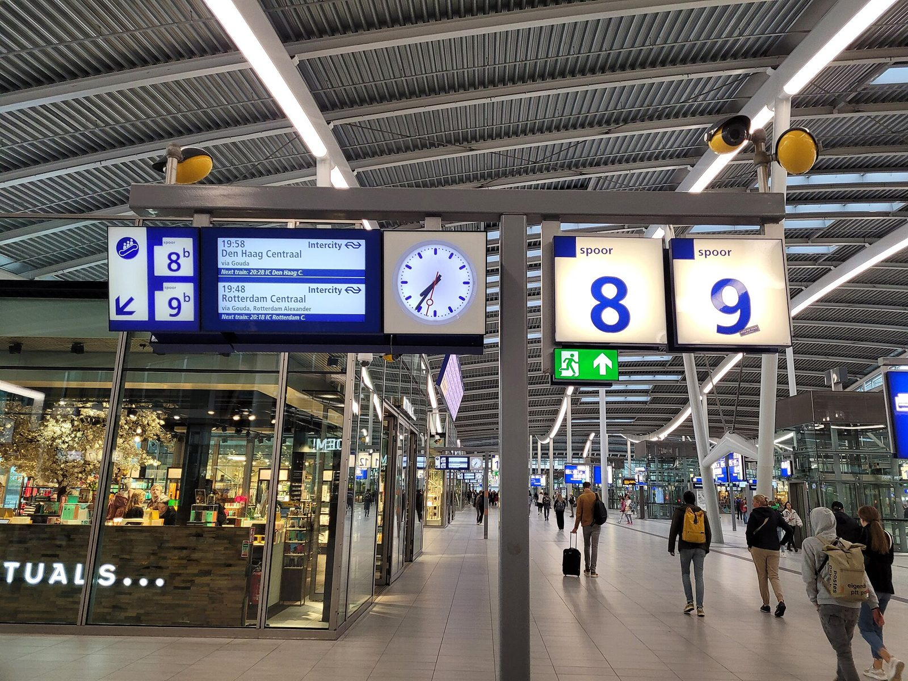

In het kort
Eind 2025 stond in Utrecht 143.200 m² kantoorruimte leeg, 6,1% van de voorraad, tegen 4,2% een jaar eerder. Tegelijk wachtte wie in 2025 een sociale huurwoning zocht gemiddeld 11,7 jaar, bij een kans van 2,8%. In de eerste helft van 2026 moet de stad 473 statushouders huisvesten, en er is een tekort van 4.400 studentenwoningen. Jongeren tot 23 jaar zijn 15% van de actief woningzoekenden, maar kregen in 2025 maar 3% van de toewijzingen. In 2022 waren 2.077 dakloze mensen met recht op opvang in beeld.
De wet maakt tijdelijk wonen in kantoren mogelijk. Met een tijdelijke afwijking van het omgevingsplan en een vergunning onder de Leegstandwet kan een kantoor tot tien jaar als woonruimte worden verhuurd. Voor de ombouw is tot en met 31 december 2027 rijkssubsidie beschikbaar (SFT): maximaal €7.000 plus €4.000 sociaal beheer per kamer, en €14.000 plus €6.000 per zelfstandige woning.
De gemeente zoekt zelf niet meer actief naar tijdelijke locaties, maar pakt projecten op "als er concrete kansen worden aangedragen" [44]. Volgens de openbare locatielijst van september 2025 zijn er 471 tijdelijke woningen opgeleverd en 742 in ontwikkeling.
Utrecht heeft bewezen dat het werkt: 't Goylaan 1-7 (leeg kantoor, sinds eind 2024 56 tijdelijke sociale huurwoningen, 30% voor kwetsbare groepen), Plan Einstein aan de Einsteindreef 101 (2016-2026), jongerenkamers aan de Kanaalweg en de Archimedeslaan, en recent de opvang aan de Europalaan 44. Buiten Utrecht maakte Nijmegen in een voormalig belastingkantoor 117 kamers voor een mix van spoedzoekers.
Wat ik vraag: onderzoek met de eigenaar of het niet-gebruikte deel van het voormalig Pieter Baan Centrum (Gansstraat 164-170) tot de bouwstart in 2028 tijdelijk bewoond kan worden. Ga na of de ruimte die het UWV aan Stadsplateau 1 opzegt vrijkomt. Toets daarnaast de langdurig leegstaande kantoren op de lijst van de kantorenloods, en vraag voor een pilot tijdig SFT-subsidie aan. De provincie steunt dat met capaciteit uit het Actieplan Flexwonen, en het Rijksvastgoedbedrijf meldt vrijkomende rijksgebouwen vroeg bij de gemeente.

1. Het probleem
Er staat kantoorruimte leeg. Eind 2025 stond in Utrecht 143.200 m² kantoorruimte te koop of te huur, dat is 6,1% van de voorraad. Een jaar eerder was dat nog 4,2% (118.000 m²) [1]. Het gaat hierbij alleen om panden van minstens 500 m². De gemeente geeft zelf aan dat enkele kantoorgebouwen al langere tijd niet meer in gebruik zijn en dat zij met de eigenaren in contact is [2].

Tegelijk is er een tekort aan woningen voor mensen die snel een plek nodig hebben. De cijfers per groep hebben verschillende definities en peiljaren en zijn dus niet op te tellen, maar samen tonen ze de omvang:
- Statushouders. In de eerste helft van 2026 moet Utrecht 473 statushouders huisvesten. Daarin zit een achterstand van 160 uit 2025 [34].
- Woningzoekenden in de sociale huur, onder wie spoedzoekers, jongeren en starters. In 2025 was de gemiddelde wachttijd 11,7 jaar en de kans om een woning te krijgen 2,8% [35]. Jongeren tot 23 jaar zijn 15% van de actief woningzoekenden, maar kregen in 2025 slechts 3% van de toewijzingen. Bij loting reageerden gemiddeld 3.225 mensen op één woning [48]. De gemeente spreekt zelf van "een groot tekort aan betaalbare jongerenhuisvesting onder jongvolwassenen tot 23 jaar" [44]. Een apart aantal spoedzoekers heb ik niet gevonden.
- Dak- en thuislozen. In 2022 waren 2.077 dakloze mensen met recht op opvang in beeld, gemiddeld 974 per dag; 16% was jonger dan 23 jaar [37]. Een nieuwe telling is gehouden op 12 mei 2026 [38].
- Studenten. Het tekort bedraagt 4.400 eenheden, nog zonder de woonvraag van mbo-studenten [3]. Bij SSH is de geschatte inschrijftijd meer dan drie jaar voor een kamer [49].
De bestaande plannen lossen dit niet snel genoeg op. Het grootste flexwoningproject van de stad, circa 450 tijdelijke woningen op Tussen de Rails in Lunetten, wordt op zijn vroegst eind 2026 opgeleverd en mogelijk pas midden of eind 2027 [4]. Volgens de openbare locatielijst van september 2025 zijn in het gemeentelijke programma 471 tijdelijke woningen opgeleverd en zijn er 742 in ontwikkeling, waarvan 120 onzeker [45]. De gemeente is gestopt met de proef om kantoren aan te kopen en te transformeren, omdat het geschikte aanbod "zeer beperkt tot nihil" was, en onderzoekt geen nieuwe tijdelijke locaties meer [44]. Nieuwe tijdelijke projecten komen er alleen nog als iemand een concrete kans aandraagt [44]. Dat is precies wat dit voorstel doet.
2. Kandidaat-gebouwen
Een openbare lijst van leegstaande kantoren per adres bestaat niet. De gemeente houdt deze wel bij, via de kantorenloods (kantorenloods@utrecht.nl) [2][5]. Uit openbare bronnen komen twee concrete kansen naar voren. Geen van beide is bewezen beschikbaar, en dat zeg ik er eerlijk bij.
- Eerste kandidaat: voormalig Pieter Baan Centrum, Gansstraat 164-170. Dit voormalige rijksgebouw is door het Rijksvastgoedbedrijf verkocht. Het plan telt maximaal 15.500 m² bvo en 132 woningen. Volgens de planning volgen het omgevingsplan in 2026 en de vergunningen in 2027, en start de bouw pas in 2028. De broedplaats in het voormalig huis van bewaring wordt al gebruikt [6][7]. Mijn inschatting is dat het niet-gebruikte deel tot 2028 tijdelijk bewoond kan worden. Welk deel leegstaat en of het bouwkundig en met de eigenaar haalbaar is, is niet onderzocht.
- Aanwijzing: Stadsplateau 1 (Stadskantoor), ruimte die het UWV verlaat. De Raad van Bestuur van het UWV besloot op 24 juni 2025 de huur van de Werkbedrijflocatie aan Stadsplateau 1 op te zeggen en te verhuizen naar de Moeder Teresalaan [47]. Hoeveel ruimte vrijkomt en wanneer, is in het openbare document weggelakt. Of die ruimte leeg blijft, wie de eigenaar is en of wonen in dit gebouw mogelijk is, weet ik niet. Het is dus een aanwijzing, geen kandidaat.
- De interne lijst van de gemeente. Daarnaast vraag ik de gemeente om de langdurig leegstaande kantoren op de lijst van de kantorenloods te toetsen op geschiktheid voor tijdelijk wonen.
- Rijksvastgoed in Utrecht. Een actueel leegstaand rijkskantoor in Utrecht dat wordt afgestoten, heb ik niet gevonden [8]. Ook op Biedboek.nl, waar het Rijk zijn verkopen publiceert, vond ik geen Utrechtse objecten [8].
Dat langdurige leegstand ook midden in de stad voorkomt, laat De Nieuwe Tuin boven Hoog Catharijne zien: dit voormalige Rabobank-kantoor van circa 32.000 m² stond ongeveer tien jaar leeg en wordt nu verbouwd tot kantoor [39]. Of tijdelijk wonen daar ooit is onderzocht, heb ik niet gevonden. Het gebouw is nu geen kandidaat meer.
Twee kanttekeningen. Het bedrijventerrein Lage Weide heeft met 20,2% de hoogste kantorenleegstand [1], maar volgens de gemeente staat de zware milieucategorie daar wonen in de weg [2]. Grote rijkskantoren zoals Graadt van Roggenweg 500 en Westraven zijn in gebruik en dus geen kandidaat [8]. De panden aan de Burgemeester Reigerstraat 47-53 staan al dertien jaar leeg, maar het zijn woningen en winkels, geen kantoor, en de eigenaar heeft een sloopvergunning [50]. Die tel ik daarom niet mee.
3. Welke instrumenten het mogelijk maken
De juridische en financiële middelen bestaan al. Het gaat erom ze te combineren.
- Tijdelijke afwijking van het omgevingsplan (tijdelijke BOPA). Onder de Omgevingswet kan de gemeente een vergunning verlenen om een bestaand gebouw tijdelijk anders te gebruiken. Voor tijdelijke activiteiten kan de beoordeling soepeler zijn, en er geldt geen wettelijke maximumtermijn [9]. Utrecht gebruikt dit instrument al voor Tussen de Rails [4]. In de praktijk wordt vaak een termijn van tien jaar gehanteerd [10][11].
- Tijdelijke verhuur onder de Leegstandwet. Het college kan de eigenaar van een leegstaand kantoor toestaan om er tijdelijk woonruimte te verhuren, zonder volledige huurbescherming. Gekoppeld aan een tijdelijke omgevingsvergunning geldt dit voor de duur daarvan, met een maximum van tien jaar [12]. Dit werkt alleen samen met de tijdelijke afwijking van het omgevingsplan [13].
- Passende huurcontracten. Tijdelijke huurcontracten mogen onder meer voor studenten en voor mensen in een sociale noodsituatie met aantoonbaar urgente woonbehoefte [14]. Daarnaast bestaan het jongerencontract (onder 28 jaar) en het campuscontract voor studenten [15].
- Landelijk geld: de Stimuleringsregeling Flex- en Transformatiewoningen (SFT). De gemeente kan tot en met 31 december 2027 subsidie aanvragen voor transformatie, ook voor onzelfstandige woonruimte, bedoeld voor onder meer statushouders en spoedzoekers. Per zelfstandige woning is dat maximaal €14.000 plus €6.000 voor sociaal beheer. Per onzelfstandige woonruimte is het maximaal €7.000 plus €4.000 [16]. De voorwaarden zijn onder meer minimaal tien jaar sociale huur, reservering van minstens 30% voor statushouders of ontheemden (dat mag ook elders), een aantoonbaar financieel tekort en start binnen 18 maanden [16].
- Regionale afspraken en provinciale steun. In de Regiodeal Flexwonen (2022) spraken Rijk, provincie, corporaties en gemeenten 1.500 flexwoningen af [17]. Via het Actieplan Flexwonen biedt de provincie gemeenten extra capaciteit, subsidie of expertise [17]. De gemeente wil daarnaast samen met SSH tijdelijke woningen toewijzen via de wachtlijst van SSH [18]. In de Woondeal regio U10 spreekt de provincie het streven uit naar circa 9.600 flexwoningen tot en met 2030 [40].
- Het Rijksvastgoedbedrijf. Het RVB stelt, "als het kan", gebouwen beschikbaar voor (tijdelijke) woningen voor onder meer statushouders en andere spoedzoekers, en helpt gemeenten en corporaties bij het ombouwen van vastgoed tot woningen [19]. Een automatisch eerste recht voor gemeenten bij verkoop bestaat niet (meer). Onderhandse verkoop aan een medeoverheid kan alleen in bijzondere gevallen en moet vooraf op Biedboek.nl worden aangekondigd [20]. Bij verkoop kan de gemeente wel doelgroepen vastleggen: bij het Pieter Baan Centrum was 25% sociale huur voor aandachtsgroepen [6].
Eén praktische les: bij Piramidedreef 5 moest een tijdelijk noodgebouw weg toen de vergunning afliep, omdat blijvend gebruik dure aanpassingen vroeg [11]. Bij bestaande stenen kantoorgebouwen speelt dat minder, maar de bouwtechnische eisen bepalen wel mede welke termijn en welke kosten haalbaar zijn.

4. Het werkt al: voorbeelden
- 't Goylaan 1-7, Utrecht (opgeleverd eind 2024). Een leegstaand kantoorpand werd in 2022-2023 eerst crisisopvang en daarna omgebouwd tot 56 tijdelijke sociale huurwoningen: 17 tweekamer- en 39 driekamerstudio's. Daarvan gaat 30% via Het Vierde Huis naar kwetsbare doelgroepen en 70% is gewone sociale huur. Het project liep via een particuliere eigenaar en de gemeente [46][45]. Over de termijn verschillen de bronnen: het nieuwsbericht noemt maximaal 15 jaar, de gemeentelijke locatielijst 10 jaar. Dit is het meest recente Utrechtse bewijs dat een leeg kantoor binnen ongeveer twee jaar tijdelijke woningen voor een gemengde groep kan opleveren.
- Einsteindreef 101, Utrecht (2016-2026). In een lang leegstaand kantoor woonden asielzoekers en jongeren samen, met tijdelijke woningen voor maximaal tien jaar [10][21]. De buurt verzette zich eerst, "maar uiteindelijk omarmde die het project, dat een succes werd" [22]. De provincie noemt Plan Einstein expliciet als inspiratie voor haar aanpak [23].
- Europalaan 44, Utrecht (sinds 2025). Een leeg voormalig Rabobank-kantoor wordt gebruikt voor tijdelijke asielopvang. Vanaf 2028 wordt het, volgens de aanpak van Plan Einstein, langdurige opvang voor maximaal 385 asielzoekers, voor maximaal 15 jaar. De gemeenteraad stemde daarmee in november 2025 in [41].
- Kanaalweg 92 (2003-2007) en Archimedeslaan 16 (2010/2012-2019), Utrecht. In een voormalig KPN-kantoor kwamen 140 jongerenkamers, in een voormalig onderwijsgebouw van de Hogeschool Utrecht 400 kamers (een tijdelijke herbestemming, geen kantoortransformatie). Bij de Archimedeslaan werd de termijn verlengd van vijf naar negen jaar, in samenwerking met gemeente en provincie [24][25].
- Wooncomplex Binder, Nijmegen (sinds 2019). Corporatie Talis maakte samen met de gemeente in een voormalig belastingkantoor 117 kamers. Die zijn voor 60% bestemd voor spoedzoekers en voor 40% voor mensen met een ondersteuningsvraag, voor een periode van negen jaar [26].
- Huis van Intussen, Eindhoven (in voorbereiding). Een voormalig belastingkantoor wordt opvang plus tijdelijke woningen voor spoedzoekers, onder wie studenten op een campuscontract [27].

5. Wie beslist wat
| Wie | Wat | Bron |
|---|---|---|
| Wethouder Matthijs Sienot (Wonen, Opvang en Asiel, Grondzaken) | Eerste aanspreekpunt; regie op tijdelijk wonen en SFT-aanvraag | [28] |
| Wethouder Linda Voortman (Ruimtelijke Ontwikkeling) | Tijdelijke afwijking van het omgevingsplan | [28] |
| Wethouder Dennis de Vries (Vastgoed) | Inzet van gemeentelijk vastgoed | [28] |
| Gemeenteraad, commissie Ruimte (sinds 1 september 2026 ook Wonen) | Agendering, moties, controle | [29][51] |
| Gedeputeerde Rob van Muilekom, provincie Utrecht (Wonen, Asiel en migratie) | Actieplan Flexwonen: capaciteit, subsidie, expertise | [30][17] |
| Rijksvastgoedbedrijf | Tijdelijk in gebruik geven of verkoop van rijksgebouwen | [31] |
| Corporaties en huisvesters (SSH, Stichting Tijdelijk Wonen, Socius Wonen, Woonin, Portaal) | Exploitatie en beheer | [32] |

6. Wat ik vraag: een realistische eerste stap
- Gemeente en eigenaar van het voormalig Pieter Baan Centrum: onderzoek binnen drie maanden of het niet-gebruikte deel tot de bouwstart in 2028 tijdelijk bewoond kan worden door een gemengde groep spoedzoekers, naar het model van 't Goylaan en Plan Einstein.
- Gemeente: ga na of de ruimte die het UWV aan Stadsplateau 1 verlaat vrij komt, van wie die is en of tijdelijk wonen daar kan.
- Gemeente (wethouder Sienot, met Voortman en De Vries): toets ook de langdurig leegstaande kantoren op de lijst van de kantorenloods op geschiktheid voor tijdelijk wonen, en zet voor een pilot de combinatie van een tijdelijke omgevingsvergunning en een Leegstandwetvergunning in. Vraag SFT-subsidie aan zolang de regeling openstaat (tot en met 31-12-2027).
- Provincie (gedeputeerde Van Muilekom): ondersteun de pilot met capaciteit en expertise uit het Actieplan Flexwonen.
- Rijksvastgoedbedrijf: meld leegstaande of vrijkomende rijksgebouwen in de regio Utrecht actief bij de gemeente voor tijdelijk gebruik als woning voor spoedzoekers.
Ik licht dit voorstel graag toe, bijvoorbeeld in een gesprek of tijdens een marktkraam van de gemeenteraad [33]. Inwoners kunnen een onderwerp met 100 handtekeningen op de agenda van de raad zetten (inwonersagendering) en met 250 handtekeningen de raad om een besluit vragen (inwonersmotie) [43].
7. Kernpunten
- Het probleem in één zin. Er staat 143.200 m² kantoorruimte leeg, terwijl de wachttijd voor een sociale huurwoning 11,7 jaar is.
- Het is al gedaan, hier. Aan 't Goylaan 1-7 werd een leeg kantoor in ongeveer twee jaar eerst crisisopvang en daarna 56 tijdelijke sociale huurwoningen. De Einsteindreef 101 was een leeg kantoor waar asielzoekers en jongeren samenwoonden; de buurt was eerst tegen, maar omarmde het project uiteindelijk [22].
- Er is geld, maar niet eindeloos. De SFT-regeling staat open tot en met 31-12-2027, en de bouw moet binnen 18 maanden starten. Wie nu begint, kan het halen.
- De instrumenten bestaan. Het gaat om de tijdelijke omgevingsvergunning (die al gebruikt wordt voor Tussen de Rails) plus de Leegstandwet. Er is geen nieuwe regelgeving nodig.
- Het is tijdelijk, en dat is een voordeel. Eigenaren houden hun plannen, het gebouw raakt niet in verval, en de termijn kan worden afgestemd op de herontwikkeling, zoals bij het Pieter Baan Centrum tot 2028.
- Mengen werkt. Binder in Nijmegen combineert 60% spoedzoekers met 40% mensen met een ondersteuningsvraag.
- De vraag is klein en concreet. De gemeente vraagt zelf om concrete kansen. Hier is er één: het Pieter Baan Centrum, met een onderzoek binnen drie maanden.
8. Veelgehoorde bezwaren, en een antwoord
- "De leegstand is frictieleegstand." De gemeente noemt 6,1% zelf binnen de 5 tot 7% frictieleegstand, maar zegt ook dat enkele kantoren al langere tijd niet in gebruik zijn. Om die panden gaat het.
- "Er is geen geschikt aanbod, dat bleek uit de gestopte kantorenpilot." Die pilot ging over aankopen en permanent transformeren. Dit voorstel vraagt om tijdelijk gebruik, met een concreet gebouw waar de bouw pas in 2028 begint.
- "Bedrijventerreinen zijn niet geschikt." Dat klopt, bijvoorbeeld voor Lage Weide door de milieucategorie. Ik vraag niet om dat terrein, maar om een toets per pand.
- "Ombouw is duur voor een tijdelijke periode." Daarvoor is de SFT-subsidie bedoeld. Bij bestaande stenen gebouwen spelen de problemen met tijdelijke noodgebouwen (zoals aan de Piramidedreef) minder, al bepalen de bouwtechnische eisen wel mede de kosten.
- "Er is geen eerste recht voor de gemeente bij rijksgebouwen." Dat klopt. Daarom vraag ik het RVB om vroegtijdig te melden en om tijdelijk gebruik, niet om voorrang bij verkoop.
Rudolf van Raalte
Bronnen
Alle bronnen zijn geraadpleegd op 25-09-2026, tenzij anders vermeld.
- Utrecht Monitor, Kantorenmarkt (publicatie 15-04-2026), cijfers van Bak / Cushman & Wakefield: https://utrecht-monitor.nl/economie-inkomen/vastgoed/kantorenmarkt
- Verordening leegstand gemeente Utrecht, toelichting (CVDR698050): https://lokaleregelgeving.overheid.nl/CVDR698050
- Convenant studentenhuisvesting Utrecht 2025-2030 (17-11-2025): https://sshprodsa.blob.core.windows.net/ssh-prod-buck-prod-sharepoint-storage-container/Convenant%20Studentenhuisvesting%20Utrecht%202025-2030.pdf
- Wijkbericht Tussen de Rails, maart 2025: https://wijkberichten.utrecht.nl/wijkberichten/2025-jan-apr/2025-03-wijkbericht-TdR-vergunningen-vertraging.pdf
- Gemeente Utrecht, Leegstaande panden hergebruiken: https://www.utrecht.nl/ondernemen/vestigen/leegstaande-panden-hergebruiken
- RVB, Start verkoop voormalig Pieter Baan Centrum (17-01-2022): https://www.rijksvastgoedbedrijf.nl/actueel/nieuws/2022/01/17/start-verkoop-voormalig-pieter-baan-centrum-in-utrecht
- Gemeente Utrecht, Voormalig Pieter Baan Centrum opnieuw ontwikkelen: https://www.utrecht.nl/wonen-en-leven/bouwprojecten-en-stedelijke-ontwikkeling/bouwprojecten/oost/voormalig-pieter-baan-centrum-opnieuw-ontwikkelen
- Rijksvastgoed in Utrecht: VG Visie over Graadt van Roggenweg 500 (03-09-2026): https://vgvisie.nl/2026/09/03/kantoorgebouw-utrecht-rijksvastgoedbedrijf-athora/ ; RVB, Rijkskantoor Westraven: https://www.rijksvastgoedbedrijf.nl/actueel/nieuws/2025/10/07/rijkskantoor-westraven-verduurzamen-en-hybride-werken ; RVB, Ontwikkelen en herbestemmen: https://www.rijksvastgoedbedrijf.nl/onderwerpen/o/ontwikkelen-en-herbestemmen ; Biedboek: https://www.biedboek.nl/
- IPLO, BOPA tijdelijk mogelijk: https://iplo.nl/regelgeving/regels-voor-activiteiten/omgevingsplanactiviteit/buitenplanse-omgevingsplanactiviteit/bopa-tijdelijk-mogelijk/
- Gemeente Utrecht, Einsteindreef 101: https://www.utrecht.nl/wonen-en-leven/bouwprojecten-en-stedelijke-ontwikkeling/bouwprojecten/overvecht/einsteindreef-101-opnieuw-ontwikkelen-sloop-en-nieuwbouw
- Wijkbericht Piramidedreef 5, augustus 2026: https://wijkberichten.utrecht.nl/wijkberichten/2026-mei-aug/2026-08-wijkbericht-weghalen-noodgebouw-met-studentenkamers-aan-de-piramidedreef-5.pdf
- Leegstandwet, art. 15: https://wetten.overheid.nl/BWBR0003403/
- VNG, leegstandvergunning voor een kantoorgebouw: https://vng.nl/vragen-en-antwoorden/kan-een-gemeente-een-leegstandvergunning-verlenen-voor-een-kantoorgebouw-niet-zijnde-een-gebouw-met-een-woonbestemming
- Besluit specifieke groepen tijdelijke huurovereenkomst: https://wetten.overheid.nl/BWBR0049798/
- Rijksoverheid, regels bij verhuur aan een doelgroep: https://www.rijksoverheid.nl/vraag-en-antwoord/woning-verhuren/welke-regels-gelden-als-ik-een-woning-aan-een-bepaalde-doelgroep-verhuur
- RVO, Stimuleringsregeling Flex- en Transformatiewoningen: https://www.rvo.nl/subsidies-financiering/sft
- Provincie Utrecht, Flexwonen (bijgewerkt 24-08-2026): https://volkshuisvesting.provincie-utrecht.nl/flexwonen
- Actieplan studentenhuisvesting Utrecht 2023-2030, §4.4 (PDF 19-04-2023), bijlage bij raadsvoorstel juni 2023: https://utrecht.bestuurlijkeinformatie.nl/Document/View/a3b45ae8-a8b0-4930-a58b-2443595316bf
- RVB, Bijzondere groepen huisvesten: https://www.rijksvastgoedbedrijf.nl/onderwerpen/b/bijzondere-groepen-huisvesten
- Regeling beheer onroerende zaken Rijk 2024: https://wetten.overheid.nl/BWBR0049701/
- Socius Wonen, Plan Einstein: https://www.sociuswonen.nl/locaties/plan-einstein/
- AD Utrecht (2023): https://www.ad.nl/utrecht/hoe-een-hok-vol-wasmachines-helpt-om-vluchtelingen-en-jongeren-succesvol-samen-te-laten-wonen~a77563ad/
- Provincie Utrecht, Plan Einstein Pahud: https://www.provincie-utrecht.nl/onderwerpen/wonen/opvang-vluchtelingen-de-utrechtse-aanpak/utrecht-plan-einstein-pahud
- Stichting Tijdelijk Wonen, Kanaalweg: https://stichtingtijdelijkwonen.nl/kanaalweg/
- Stichting Tijdelijk Wonen, Archimedeslaan: https://stichtingtijdelijkwonen.nl/%e2%81%a0archimedeslaan/
- Flexwonen.nl, Wooncomplex Binder Nijmegen: https://flexwonen.nl/praktijkvoorbeelden/wooncomplex-binder-nijmegen/
- Gemeente Eindhoven, Karel de Grotelaan 4: https://www.eindhoven.nl/stad-en-wonen/asielopvang/asielopvang-en-wonen-karel-de-grotelaan-4
- Gemeente Utrecht, Burgemeester en wethouders: https://www.utrecht.nl/bestuur-en-organisatie/college-van-b-en-w/burgemeester-en-wethouders
- Gemeente Utrecht, Commissies: https://www.utrecht.nl/bestuur-en-organisatie/gemeenteraad/commissies
- Provincie Utrecht, Gedeputeerde Staten: https://www.provincie-utrecht.nl/politiek-bestuur/gedeputeerde-staten
- RVB, Contact: https://www.rijksvastgoedbedrijf.nl/contact-ons
- Uitvoerders en huisvesters: SSH: https://www.sshxl.nl/ ; Stichting Tijdelijk Wonen: https://stichtingtijdelijkwonen.nl/ ; Socius Wonen: https://www.sociuswonen.nl/locaties/plan-einstein/ ; Woonin en Portaal (Tussen de Rails), zie bron 4
- Gemeente Utrecht, Praat met de raad: https://www.utrecht.nl/bestuur-en-organisatie/gemeenteraad/praat-met-de-raad
- Utrecht Monitor, Vluchtelingen: https://utrecht-monitor.nl/bevolking-bestuur/bevolking/vluchtelingen
- Utrecht Monitor, Huurwoningmarkt (publicatie 15-04-2026): https://utrecht-monitor.nl/fysieke-leefomgeving/wonen/huurwoningmarkt
- Utrecht Monitor, Wonen in Utrecht, samenvatting: https://utrecht-monitor.nl/wonen-utrecht/samenvatting
- Volksgezondheidsmonitor Utrecht, Dakloosheid (cijfers 2022): https://volksgezondheidsmonitor.nl/zorg-en-opvang/dakloosheid
- Gemeente Utrecht, Telonderzoek dak- en thuisloze mensen: https://zorgprofessionals.utrecht.nl/hulp-en-ondersteuning-wmo/opvang-en-beschermd-wonen/telonderzoek-dak-en-thuisloze-mensen
- Gemeente Utrecht, De Nieuwe Tuin: https://www.utrecht.nl/wonen-en-leven/bouwprojecten-en-stedelijke-ontwikkeling/bouwprojecten/binnenstad/de-nieuwe-tuin-toekomstbestendig-kantoorgebouw ; RTV Utrecht 09-03-2026: https://www.rtvutrecht.nl/nieuws/4014390/omstreden-leegstaand-kantoorpand-boven-hoog-catharijne-krijgt-nieuwe-bestemming
- Woondeal Utrecht 2022-2030 (6-3-2023): https://www.volkshuisvestingnederland.nl/site/binaries/site-content/collections/documents/2023/04/21/woondeal-utrecht/Woondeal+Utrecht+2022-2030.pdf
- RTV Utrecht 04-09-2025 en 21-11-2025: https://www.rtvutrecht.nl/nieuws/3937140/mogelijk-langdurige-opvang-van-bijna-400-asielzoekers-in-kantoor-utrecht ; https://www.rtvutrecht.nl/nieuws/3970057/opvang-voor-385-asielzoekers-in-utrecht
- Videoregistratie commissie Ruimte 28-05-2026: https://gemeenteutrecht.connectedviews.nl/SitePlayer/gemeente_utrecht?lang=nl&;session=110632
- Verordening inwonersagendering en inwonersmotie gemeenteraad Utrecht (CVDR716541): https://lokaleregelgeving.overheid.nl/CVDR716541
- Raadsbrief Voortgangsrapportage Realisatie sociale huisvesting Q1/Q2 2025 (16-09-2025): https://utrecht.bestuurlijkeinformatie.nl/Document/View/212f1be0-c334-482d-a957-b08bb36c7238
- Gemeente Utrecht, Locatielijst tijdelijk wonen, openbare versie (september 2025): https://utrecht.bestuurlijkeinformatie.nl/Document/View/29a27875-8099-41b4-80d5-71e0ac5d359d
- utrecht.nieuws.nl, Kantoorpand aan 't Goylaan krijgt sociale huurappartementen (22-04-2023): https://utrecht.nieuws.nl/stadsnieuws/kantoorpand-aan-t-goylaan-krijgt-sociale-huurappartementen ; raadsbrief: https://utrecht.bestuurlijkeinformatie.nl/Reports/Item/086e11c9-5703-4dd9-98a9-c4014870a816
- UWV, beslisnotitie opzegging Stadsplateau 1 (24-06-2025, Woo-publicatie): https://www.uwv.nl/assets-kai/files/118c0bad-cd26-4a50-b0b2-77ba0f4945d8/25-253-beslisnotitie-opzegging-stadsplateau.pdf
- Gemeente Utrecht, Wonen in Utrecht 2025, hoofdstuk 2 Beschikbaarheid: https://onderzoek.utrecht.nl/wonen-utrecht-2025/2-beschikbaarheid
- SSH, Steden en inschrijftijd: https://help.sshxl.nl/nl/articles/374344-steden-en-inschrijftijd
- RTV Utrecht (24-12-2025): https://www.rtvutrecht.nl/nieuws/3985379/krakers-hoeven-burgemeester-reigerstraat-nog-niet-te-verlaten-kans-op-leegstand-te-groot
- Gemeenteblad 2026, 347866 (commissie Ruimte, taakverdeling per 01-09-2026): https://zoek.officielebekendmakingen.nl/gmb-2026-347866.html
Foto's
Alle foto's komen van Wikimedia Commons en vallen onder een vrije licentie.
- View of Oudegracht from Vollersbrug, Utrecht 2024-11-28.jpg: Andy Li, CC0, bronpagina
- Domtoren Utrecht (15691670755).jpg: FaceMePLS from The Hague, The Netherlands, CC BY 2.0, bronpagina
- Croeselaan met de Rabobank.jpg: Jan dijkstra, CC BY-SA 4.0, bronpagina
- Utrecht Overvecht - flats Atlasdreef en Centaurusdreef.jpg: Frans van Rooden, CC BY-SA 4.0, bronpagina
- Utrecht Centraal hal.jpg: Prolete, CC0, bronpagina
{kind=link}
.jpg){kind=link}
{kind=link}
{kind=link}
{kind=link}